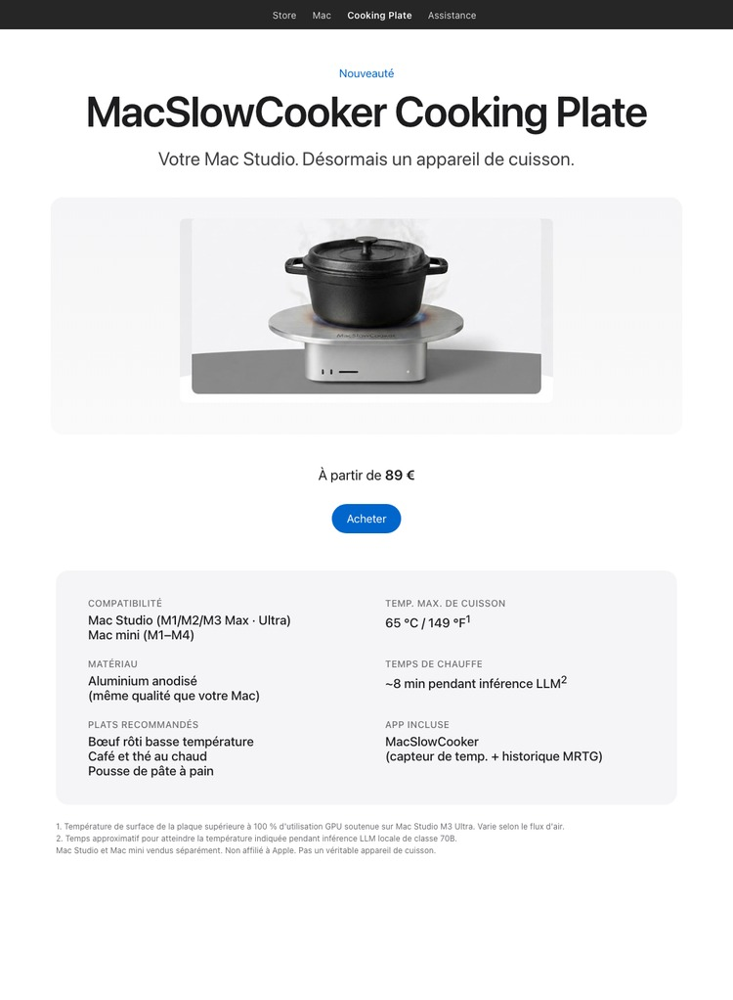
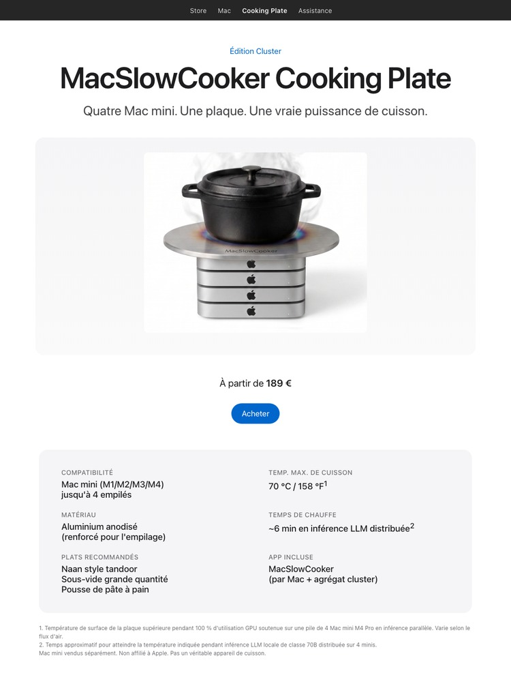
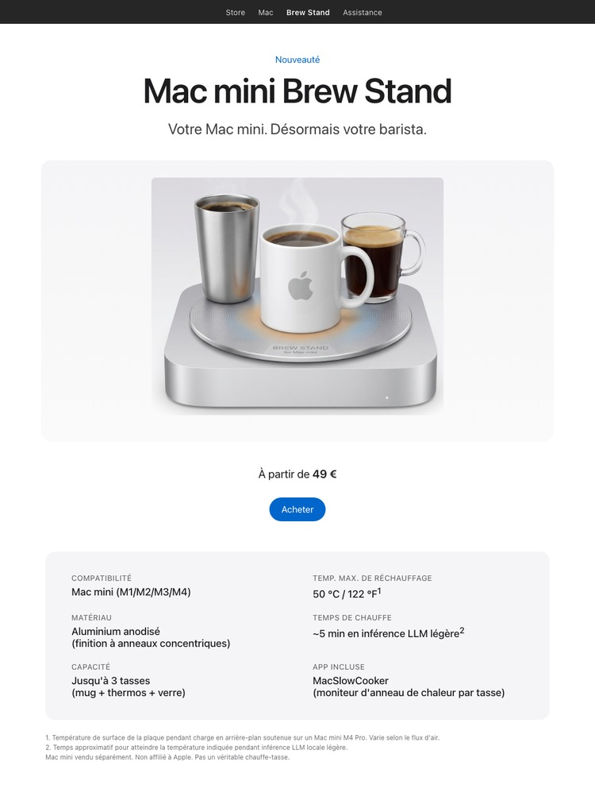
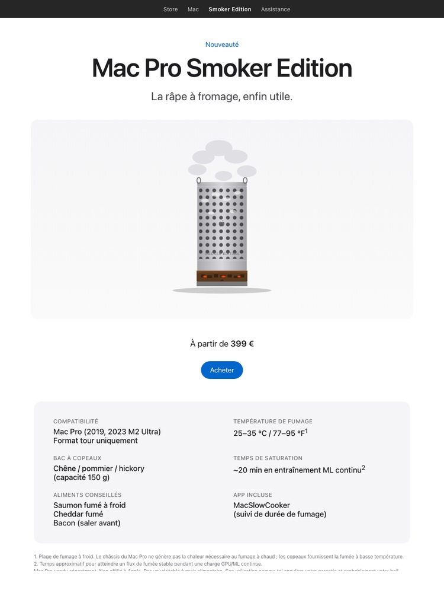
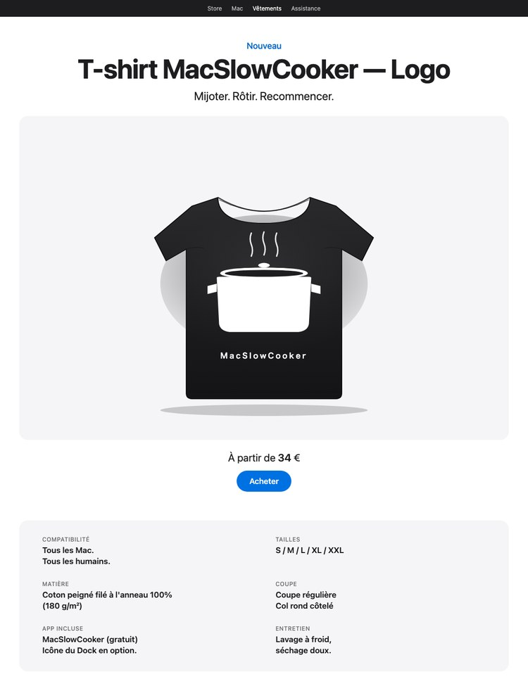
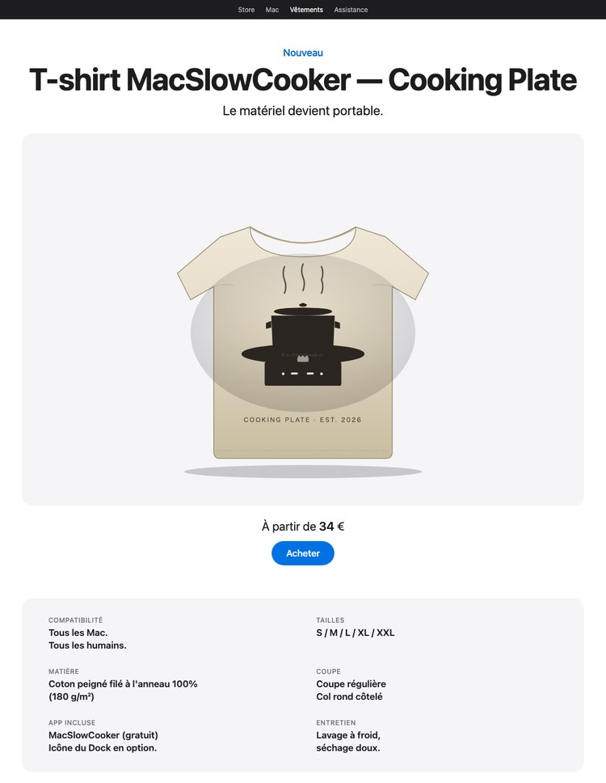

Votre Mac Studio. Désormais un appareil de cuisson.


Édition Cluster — pour le rack d'entraînement LLM. Quatre Mac mini, une plaque. Même parodie, quatre fois plus de BTU.

Brew Stand — votre Mac mini, désormais votre barista. La version chauffe-tasses du Cooking Plate. Finition à anneaux concentriques, capacité 3 tasses. Même parodie, version boissons chaudes.

Smoker Edition — votre râpe à fromage, enfin réalisée. Les perforations du châssis Mac Pro deviennent une cheminée de fumage à froid ; un tiroir à copeaux à la base fournit la fumée. Plage saumon fumé à froid, pas BBQ. Pas un produit réel.

T-shirt Logo — marque minimale, résidence maximale. L'icône de la cocotte de l'app, sérigraphiée en blanc sur un t-shirt noir de 180 g/m². 100% coton peigné filé à l'anneau. Non affilié à Apple. Pas un véritable ustensile de cuisine.

T-shirt Cooking Plate — inférence portable. Illustration Mac Studio + cocotte sérigraphiée à l'encre profonde sur un t-shirt chiné naturel de 180 g/m². Le matériel, sur un cintre.
Pendant le développement de MacSlowCooker — une vraie app macOS qui visualise l'utilisation GPU sur le Dock comme une marmite — exécuter de l'inférence LLM locale sur un Mac Studio M3 Ultra chauffe le châssis assez fort pour que la blague "tu pourrais vraiment cuisiner là-dessus ?" revienne en boucle.
Voilà donc cette page concept. Elle présente la chaleur d'un Mac qui travaille dur comme si c'était une fonctionnalité de cuisine. Les chiffres sont réels, le produit ne l'est pas.
Poser de la vaisselle chaude, des liquides ou quoi que ce soit de sensible à la chaleur sur un ordinateur en marche est une mauvaise idée. La plaque supérieure du Mac Studio est en aluminium mais le flux d'air est crucial pour maintenir le SoC sous les limites thermiques. La bloquer raccourcit la durée de vie de la machine et peut annuler la garantie.